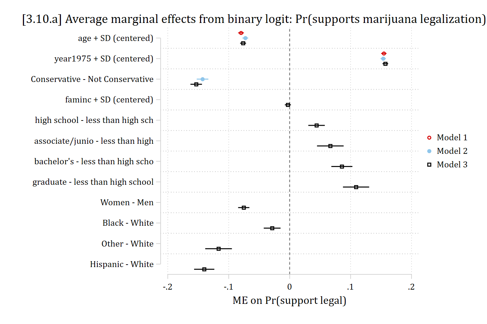
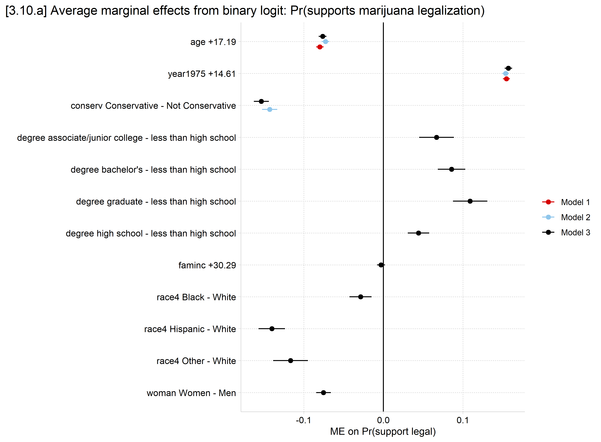
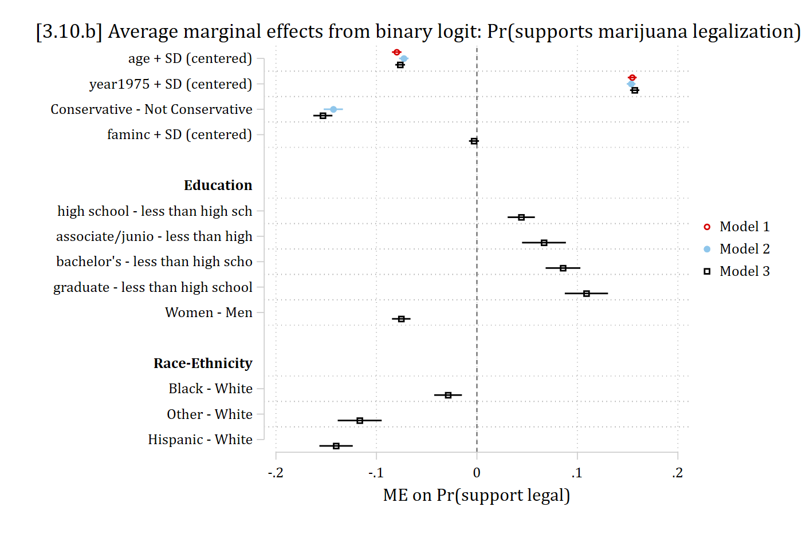

library(haven) # import Stata data and labels
library(dplyr) # data manipulation
library(ggplot2) # graphs
library(modelsummary) # tables and plots of results
library(marginaleffects) # predictions and marginal effects
library(cleanplots) # graph scheme
cleanplots_defaults()
# Center changes in continuous IVs on each observation's value
options(marginaleffects_contrast_direction = "center")
gss <- read_dta("https://tdmize.github.io/data/data/cda_gss22.dta")
# Drop any missing data on model vars
gss <- gss[complete.cases(gss[c("grass", "age", "conserv", "faminc", "college",
"woman", "race4")]), ]
# Create year since 1975 variable; treat binary/nominal variables as factors
gss <- gss |>
mutate(year1975 = as.numeric(year) - 1975,
conserv = as_factor(conserv), degree = as_factor(degree),
woman = as_factor(woman), race4 = as_factor(race4)) |>
droplevels()
# stepwise binary logit model, storing each time
mjmod1 <- glm(grass ~ age + poly(year1975, 2, raw = TRUE),
data = gss, family = binomial(link = "logit"))
mjmod2 <- glm(grass ~ age + poly(year1975, 2, raw = TRUE) + conserv,
data = gss, family = binomial(link = "logit"))
mjmod3 <- glm(grass ~ age + poly(year1975, 2, raw = TRUE) + conserv + faminc + degree +
woman + race4, data = gss, family = binomial(link = "logit"))3.10 Bonus: Tables & Plots of Results
- Most every quantitative publication should include a descriptive statistics table and a table and/or plot of model results
- Sometimes in the main text, sometimes in the Online Appendix
- Stata and R can automate these tables and plots of results
- Tables
- Stata
- R
- modelsummary package
- datasummary function for descriptive statistics
- modelsummary function for model results
- modelsummary package
- Plots of model results
- Tables
The examples use the GSS marijuana legalization data from 3.5, with three models that add IVs step by step:
use "https://tdmize.github.io/data/data/cda_gss22", clear(GSS 1972-2022 CDA - Categorical Data Analysis | 2024-12-03)drop if missing(grass, age, conserv, faminc, college, woman, race4)(37,924 observations deleted)recode grass 2 = 0(0 changes made to grass)lab def glab 0"not be legal" 1 "should be legal"
lab val grass glab
* Create year since 1975 variable
gen year1975 = year - 1975
lab var year1975 "years since 1975"
// stepwise binary logit model, storing each time //
qui logit grass c.age c.year1975##c.year1975, or
est store mjmod1
* mecompare without a varlist estimates AMEs for all IVs.
** Add store() option to save MEs to make a table or plot
qui mecompare, amount(sd) store(mes1) model(mjmod1)
qui logit grass c.age c.year1975##c.year1975 i.conserv, or
est store mjmod2
qui mecompare, amount(sd) store(mes2) model(mjmod2)
qui logit grass c.age c.year1975##c.year1975 i.conserv ///
c.faminc i.degree i.woman i.race4, or
est store mjmod3
qui mecompare, amount(sd) store(mes3) model(mjmod3)Tables of odds ratios
- Tables of odds ratios are traditional and should generally be included somewhere
- I usually include these in the Online Appendix
- With esttab, use option eform (exponentiate) to get odds ratios
* Use esttab to make single table of ORs
esttab mjmod1 mjmod2 mjmod3, ///
eform nobase b(3) se(3) nogaps label varwidth(35)--------------------------------------------------------------------------------
> ---
(1) (2) (3)
>
should mar~l should mar~l should mar~l
>
--------------------------------------------------------------------------------
> ---
should marijuana be made legal
>
age of respondent 0.976*** 0.978*** 0.976
> ***
(0.001) (0.001) (0.001)
>
years since 1975 0.956*** 0.958*** 0.957
> ***
(0.003) (0.003) (0.003)
>
years since 1975 # years since 1975 1.002*** 1.002*** 1.002
> ***
(0.000) (0.000) (0.000)
>
Conservative 0.467*** 0.433
> ***
(0.013) (0.012)
>
Family Income in 1000s 0.999
>
(0.000)
>
high school 1.274
> ***
(0.049)
>
associate/junior college 1.435
> ***
(0.085)
>
bachelor's 1.583
> ***
(0.075)
>
graduate 1.782
> ***
(0.102)
>
Women 0.669
> ***
(0.017)
>
Black 0.856
> ***
(0.033)
>
Other 0.510
> ***
(0.036)
>
Hispanic 0.438
> ***
(0.025)
>
--------------------------------------------------------------------------------
> ---
Observations 34466 34466 34466
>
--------------------------------------------------------------------------------
> ---
Exponentiated coefficients; Standard errors in parentheses
* p<0.05, ** p<0.01, *** p<0.001modelsummary(list("Model 1" = mjmod1, "Model 2" = mjmod2, "Model 3" = mjmod3),
exponentiate = TRUE, fmt = 3,
stars = c("*" = .05, "**" = .01, "***" = .001),
coef_rename = TRUE, gof_map = "nobs")| Model 1 | Model 2 | Model 3 | |
|---|---|---|---|
| * p < 0.05, ** p < 0.01, *** p < 0.001 | |||
| (Intercept) | 1.014 | 1.166** | 1.288*** |
| (0.047) | (0.055) | (0.077) | |
| age of respondent | 0.976*** | 0.978*** | 0.976*** |
| (0.001) | (0.001) | (0.001) | |
| year1975 [1st degree] | 0.956*** | 0.958*** | 0.957*** |
| (0.003) | (0.003) | (0.003) | |
| year1975 [2nd degree] | 1.002*** | 1.002*** | 1.002*** |
| (0.000) | (0.000) | (0.000) | |
| conserv [Conservative] | 0.467*** | 0.433*** | |
| (0.013) | (0.012) | ||
| Family Income in 1000s | 0.999 | ||
| (0.000) | |||
| degree [high school] | 1.274*** | ||
| (0.049) | |||
| degree [associate/junior college] | 1.435*** | ||
| (0.085) | |||
| degree [bachelor's] | 1.583*** | ||
| (0.075) | |||
| degree [graduate] | 1.782*** | ||
| (0.102) | |||
| woman [Women] | 0.669*** | ||
| (0.017) | |||
| race4 [Black] | 0.856*** | ||
| (0.033) | |||
| race4 [Other] | 0.510*** | ||
| (0.036) | |||
| race4 [Hispanic] | 0.438*** | ||
| (0.025) | |||
| Num.Obs. | 34466 | 34466 | 34466 |
- Default is to show table within Stata/R, can export to Word (.rtf or .docx), Excel, LaTeX, etc.
* Use .rtf format to export to Word
esttab mjmod1 mjmod2 mjmod3 using or_table.rtf, replace ///
eform nobase b(3) se(3) nogaps label varwidth(35)modelsummary(list("(1)" = mjmod1, "(2)" = mjmod2, "(3)" = mjmod3),
exponentiate = TRUE, fmt = 3,
stars = c("*" = .05, "**" = .01, "***" = .001),
coef_rename = TRUE, gof_map = "nobs",
output = "mjmods_or.docx")Tables of marginal effects
- In Stata, use mecompare – see “plotting and tabulating results”
- mecompare without a variable list will calculate AMEs for all IVs in the model
- I always add amount(sd) so all continuous IVs are a +SD effect
- Option store(sname) will save the MEs; sname is your name for what they are called
- Also pass the stored model(mname)
- Stored MEs are named sname_mname
- Use esttab to make the table
- In R, use avg_comparisons and list all IVs in a variables = list() option
- Save each call as an object
- Use modelsummary to make the table
- Note my shape option which is needed here
* Use esttab to make a single table of MEs.
** mecompare saves them as the store() name _ model() name
esttab mes1_mjmod1 mes2_mjmod2 mes3_mjmod3, ///
b(3) se(3) nogaps label varwidth(32)--------------------------------------------------------------------------------
(1) (2) (3)
should mar~l should mar~l should mar~l
--------------------------------------------------------------------------------
age + SD (centered) -0.080*** -0.073*** -0.076***
(0.002) (0.002) (0.002)
year1975 + SD (centered) 0.155*** 0.154*** 0.157***
(0.002) (0.002) (0.002)
Conservative - Not Conservative -0.143*** -0.153***
(0.005) (0.005)
faminc + SD (centered) -0.003
(0.003)
high school - less than high sch 0.044***
(0.007)
associate/junio - less than high 0.067***
(0.011)
bachelor's - less than high scho 0.086***
(0.009)
graduate - less than high school 0.109***
(0.011)
Women - Men -0.075***
(0.005)
Black - White -0.029***
(0.007)
Other - White -0.117***
(0.011)
Hispanic - White -0.140***
(0.008)
--------------------------------------------------------------------------------
Observations 34466 34466 34466
--------------------------------------------------------------------------------
Standard errors in parentheses
* p<0.05, ** p<0.01, *** p<0.001sd_age <- round(sd(gss$age), 2)
sd_year <- round(sd(gss$year1975), 2)
sd_inc <- round(sd(gss$faminc), 2)
mes1 <- avg_comparisons(mjmod1, variables = list(age = sd_age, year1975 = sd_year))
mes2 <- avg_comparisons(mjmod2,
variables = list(age = sd_age, year1975 = sd_year, conserv = "reference"))
mes3 <- avg_comparisons(mjmod3,
variables = list(age = sd_age, year1975 = sd_year, conserv = "reference",
faminc = sd_inc, degree = "reference", woman = "reference", race4 = "reference"))
modelsummary(list("Model 1" = mes1, "Model 2" = mes2, "Model 3" = mes3),
shape = term : contrast ~ model, fmt = 3,
stars = c("*" = .05, "**" = .01, "***" = .001),
gof_map = "nobs")| Model 1 | Model 2 | Model 3 | |
|---|---|---|---|
| * p < 0.05, ** p < 0.01, *** p < 0.001 | |||
| age +17.19 | -0.080*** | -0.073*** | -0.076*** |
| (0.002) | (0.002) | (0.002) | |
| year1975 +14.61 | 0.155*** | 0.154*** | 0.157*** |
| (0.002) | (0.002) | (0.002) | |
| conserv Conservative - Not Conservative | -0.143*** | -0.153*** | |
| (0.005) | (0.005) | ||
| degree associate/junior college - less than high school | 0.067*** | ||
| (0.011) | |||
| degree bachelor's - less than high school | 0.086*** | ||
| (0.009) | |||
| degree graduate - less than high school | 0.109*** | ||
| (0.011) | |||
| degree high school - less than high school | 0.044*** | ||
| (0.007) | |||
| faminc +30.29 | -0.003 | ||
| (0.003) | |||
| race4 Black - White | -0.029*** | ||
| (0.007) | |||
| race4 Hispanic - White | -0.140*** | ||
| (0.008) | |||
| race4 Other - White | -0.117*** | ||
| (0.011) | |||
| woman Women - Men | -0.075*** | ||
| (0.005) | |||
| Num.Obs. | 34466 | 34466 | 34466 |
Plots of marginal effects
- You could plot the odds ratios, but I don’t find it very informative and it can be problematic
- Effect size is hard to understand
- ORs rescale across models, so are not comparable / cannot be used to compare effect sizes across models
- All continuous IVs are +1 effects, which are not comparable across IVs, and usually don’t reflect much of that variable’s effect
- Effect size is hard to understand
- Marginal effects do not have these limitations, can be compared directly across models, and can be put in a meaningful unit of change (my default is to plot the +SD MEs for continuous IVs)
- 2sd or trimrange is also reasonable
- Always include a reference line at 0 which indicates no effect
* Use coefplot. Add a xline(0) to show no effect
coefplot mes1_mjmod1 mes2_mjmod2 mes3_mjmod3, xline(0) ///
legend(order(2 "Model 1 " 4 "Model 2" 6 "Model 3")) ///
xtitle("ME on Pr(support legal)") graphregion(margin(l=10)) ///
title("[3.10.a] Average marginal effects from binary logit: Pr(supports ma
rijuana legalization)", span)
modelplot(list("Model 1" = mes1, "Model 2" = mes2, "Model 3" = mes3),
shape = term : contrast ~ model) +
geom_vline(xintercept = 0) +
scale_y_discrete(limits = rev) +
labs(title = "[3.10.a] Average marginal effects from binary logit: Pr(supports marijuana legalization)",
x = "ME on Pr(support legal)", color = NULL) +
theme(plot.title.position = "plot")
- In Stata, can customize coefplot, e.g. with headings for nominal IVs
* can customize coefplot, e.g. with headings for nominal IVs
coefplot mes1_mjmod1 mes2_mjmod2 mes3_mjmod3, ///
headings("high school - *" = "{bf:Education}" ///
"Black - *" = "{bf:Race-Ethnicity}") ///
xline(0) legend(order(2 "Model 1 " 4 "Model 2" 6 "Model 3")) ///
xtitle("ME on Pr(support legal)") graphregion(margin(l=10)) ///
title("[3.10.b] Average marginal effects from binary logit: Pr(supports ma
rijuana legalization)", span)